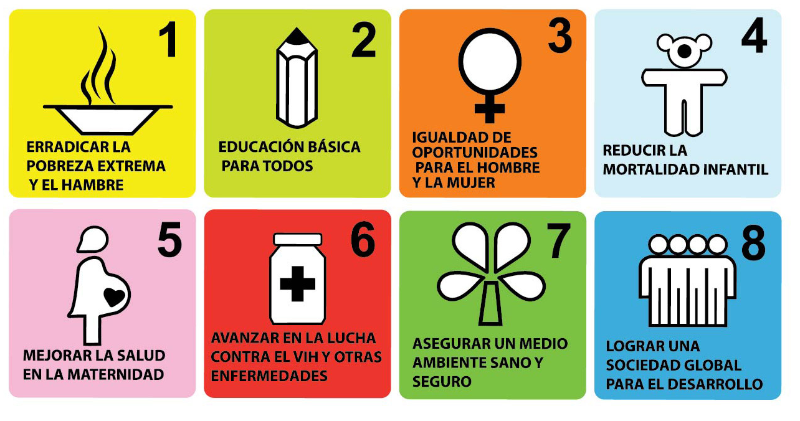

En el nuevo tablero de juego internacional en el que el Sur Global quedaba definitivamente a la deriva, desde la Secretaría General de Naciones Unidas el egipcio Butros Butros-Ghali propuso la celebración de una serie de cumbres internacionales para afrontar y poner remedio a los grandes problemas de la humanidad. A día de hoy, 1.200 millones de personas subsisten con un dólar al día, otros 925 millones pasan hambre, 114 millones de niños en edad escolar no acuden a la escuela, de ellos, 63 millones son niñas. Al año, pierden la vida 11 millones de menores de cinco años, la mayoría por enfermedades tratables; en cuanto a las madres, medio millón perece cada año durante el parto o maternidad. El sida no para de extenderse matando cada año a tres millones de personas, mientras que otros 2400 millones no tienen acceso a agua potable. En este contexto, tras la celebración de dichas citas a lo largo de los noventa y con la pujanza de los movimientos antiglobalización, tuvo lugar en septiembre de 2000, en la ciudad de Nueva York, la Cumbre del Milenio. Representantes de 189 estados recordaban los compromisos adquiridos en los noventa y firmaban la Declaración del Milenio.
odm@gmail.com